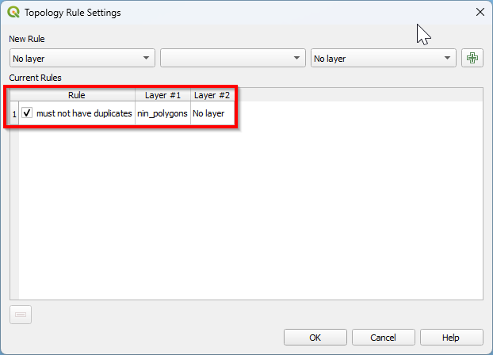
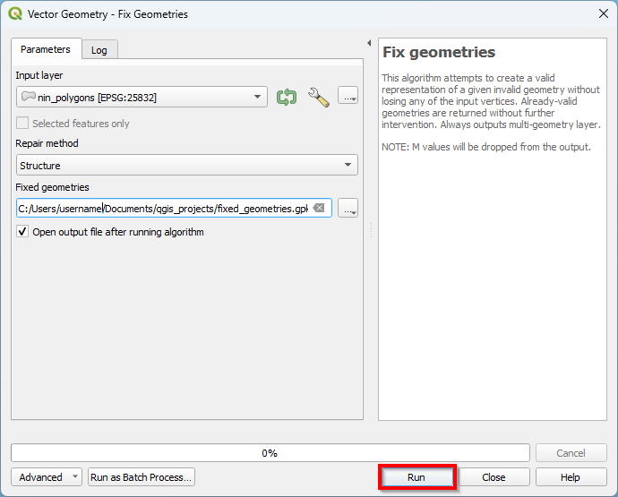
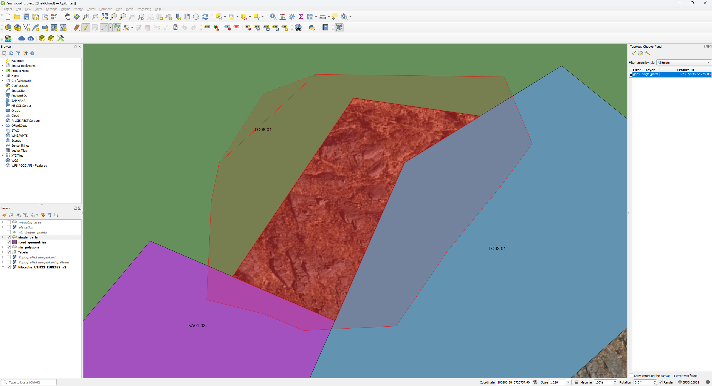
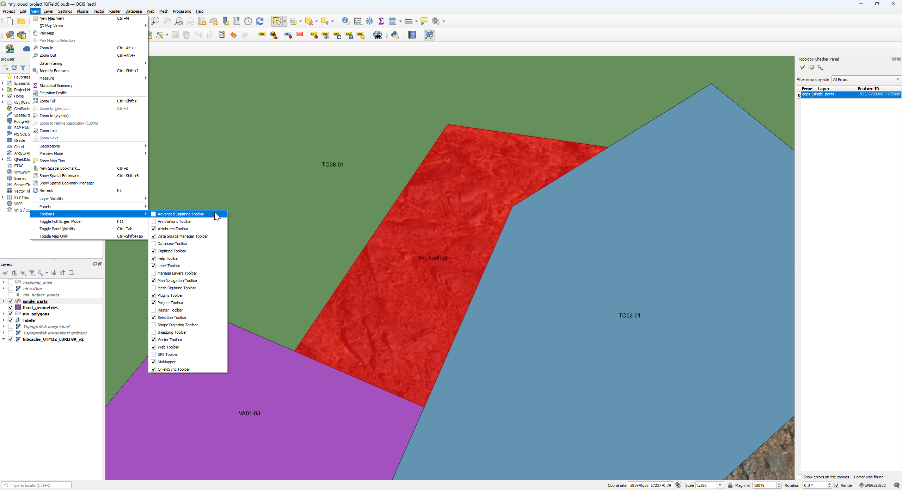

7 Kvalitetssikring
Under kartlegging kan det oppstå topologifeil når polygonene utfigureres. Dette kan føre til følgefeil om man vil bruke kartet i analyser i etterkant av feltarbeidet. I bildet nedenfor er det vist et utvalg av topologifeil:
A. Overlapp
B. Invalid geometri
C. Hull
D. Geometri med flere deler
E. Duplisert hjørnekoordinat

7.1 Aktiver Topology Checker


7.2 Finn topologifeil
7.2.1 Gå til Vector i menylinjen og klikk på Topology Checker


Panelet for Topology Checker vil nå dukke opp.


7.2.7 Klikk på (+) for å legge til regelen


Du har nå opprettet en regel som sier at kartlaget ikke skal inneholde duplikater.
7.2.8 Opprett regler somm du ønsker å basere søket ditt på (på samme måte som ovenfor)

Her har vi valgt å basere søket på disse reglene:
Kartlaget skal ikke ha duplikater.
Kartlaget skal ikke ha hull.
Kartlaget skal ikke ha invalide geometrier.
Kartlaget skal ikke ha geometrier bestående av flere atskilte deler.
Kartlaget skal ikke ha overlappende polygoner.


7.3 Behandle topologifeil


7.3.5 Endre på hjørnekoordinatene i de overlappende polygonene slik at de ikke overlapper lenger
Dette gjør du ved å endre på gamle hjørnekoordinater eller ved å opprette nye. Gamle hjørnekoordinater vil markeres med en sirkel når du holder musepekeren over dem. Klikk på sirkelen om du vil opprette enn ny hjørnekoordinat. Klikk igjen når du holder musepekeren over den ønskede posisjonen til den nye hjørnekoordinaten.Halvveis mellom to hjørnekoordinater er det mulig å opprette en ny hjørnekoordinat. Det vil dukke opp et kors når du holder musepekeren over. Klikk på korset om du vil opprette enn ny hjørnekoordinat. Klikk igjen når du holder musepekeren over den ønskede posisjonen til den nye hjørnekoordinaten. Musepekeren vil automatisk snappes mot hjørnekoordinater og gjøre det enklere å unnngå hull eller nye overlapp i kartet under denne operasjonen.


7.3.6 Behandle invalide geometrier


7.3.6.7 Klikk på Run
Merk at kartlaget ikke har fått samme stil som det originale kartlaget. Overskriv stilen til det nye kartlaget ved å kopiere stilen til det opprinnelige kartlaget (se del 4.3.5 Endre stil ved kopiering og liming).


Når du igjen klikker på Validate All vil du se at det ikke er flere invalide geometrier.
7.3.7 Behandle geometrier med flere atskilte deler


7.3.7.6 Klikk på Run

Merk at kartlaget ikke har fått samme stil som det opprinnelige kartlaget. Overskriv stilen i det nye kartlaget ved å kopiere stilen til det opprinnelige kartlaget (se del 4.3.5 Endre stil ved kopiering og liming).

Når du igjen klikker på Validate All vil du se at det ikke er flere geometrier med flere atskilte deler.
7.3.8 Behandle hull


7.3.8.4 Utfigurer en polygon rundt hullet ved å klikke der du vil opprette hjørnekoordinater. Venstreklikk når polygonen er utfigurert.

Det vil dukke opp et registreringsskjema.

7.3.8.6 Gå til View -> Panels i menylinjen og klikk på Advnaced Digitizing Panel


Det vil dukke opp nye ikoner i verktøylinjen.

7.3.8.9 Hold inne Ctrl og klikk samtidig på en polygon du ønsker å smelte sammen med polygonen i hullet